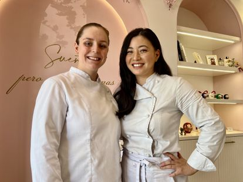
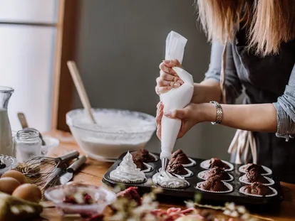
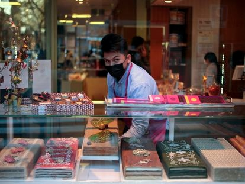

Noelia Tomoshige, la pastelera japonesa que rompe moldes en Getafe
Monroebakes, una nueva pastelería en la localidad madrileña, elabora dulces de obrador ligeros y
bajos en azúcar, de corazón japonés y técnica francesa, influidos por la tradición repostera española.
Leer más

Los mejores ‘kits’ de repostería
La repostería es una gran práctica para combinar la elaboración de recetas. Ahora bien, es necesario contar
con los utensilios básicos de cocina para poder llevar a cabo todas las creaciones culinarias y, ¡cuantos más mejor!
Leer más

Dónde comprar un buen turrón
En esta ruta madrileña para comprar turrones de calidad conviven confiterías centenarias con obradores
modernos y se encuentran desde tabletas de sabores tradicionales hasta elaboraciones de stracciatella de
yuzu o té matcha.
Leer más